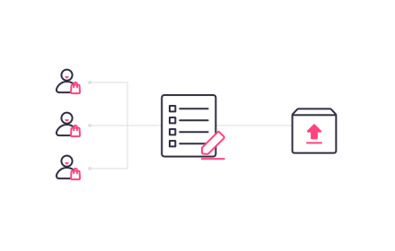
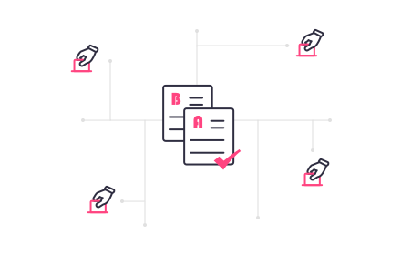
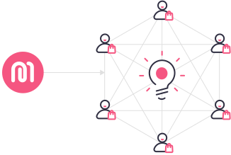

Participate in Decision-making and Create a Better Future
Participate in MartEx governance by submitting or voting on improvement proposals. DAO is an important step towards the decentralization of MartEx. Please come and make suggestions for the future ecological development of MartEx.
What is a MartEx DAO?
DAO stands for "decentralized autonomous organization." The MartEx DAO has the most components of a MartEx
Important smart contracts and assets,MartEx is a staunch practitioner of distributed governance. Distributed governance is the core strategy for the future development of MartEx project.
Therefore, MartEx will be handed over to the community to govern by time, and all stakeholders participated in the discussion to govern the project through proposals and promote the development of MartEx.

What is SIP?
SIP (MartEx Improvement Proposal) stands for proposals submitted by MartEx community members to suggest improvements for the entire MartEx system. All the $MEX holders have rights to vote on them whether it's "Support" or "Against".
In the beginning, it will be off-chain, gas-free community. The members of MartEx DAO committee are able t o create proposals and all members can vote for those proposals.
Because you care that we progress.
Why should I care about DAO?
MartEx was the first fully decentralized e-commerce platform. Devolution is addressed by separating governance from consensus. In short - you, the user. With the DAO, you can control the policies that are made to determine MartEx's behavior: for example,
1. which countries the DAO votes on prioritize interface development.
2. which platforms should be supported first.
3. Increase or decrease incentive percentage, etc.

How does DAO work?
At present, MartEx core team initiates proposals for policy updates and future planning, and the community uses Snapshot to vote. If the number reaches the specified number, the proposal will be approved, which is not completely decentralized governance. The ultimate goal of MartEx is to be a project completely governed by a distributed autonomous organization (DAO). The vote is conducted on the MartEx Snapshot governance interface.
MartEx core team is only taking control in the beginning, overtime, the control will be handled over fully to the community to implement a fully decentralized autonomous organization.

What things can I be part of?
As said above, MartEx DAO will be fully decentralized over time, and the ranges of proposals will be expanded too over time, this includes:
1. Direction of MartEx project.
2. Tokenomic changes.
3. Market expansion strategy
4. etc...